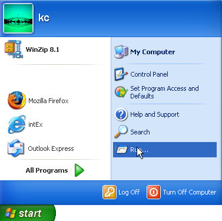
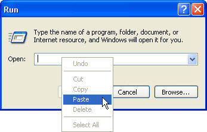
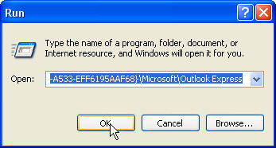
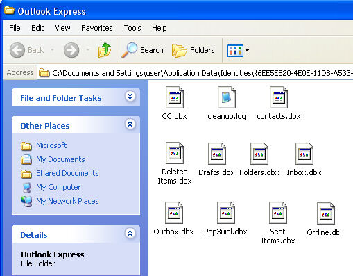
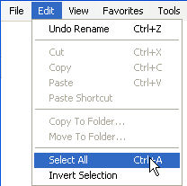
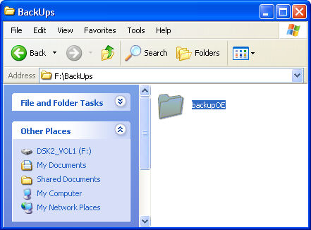

Free
computer Tutorials
|
Free
computer Tutorials
|
|
 home home |
Stay at Home and Learn | ||||
Backup Emails in Outlook Express, Part TwoThis lesson follows on from the previous tutorial.
In the last lesson, you copied the location of where Outlook Express stores all your email folders. In this lesson, you'll now copy those folders, and then paste them to the backup folder you created. Off we go then.
Locate the Outlook Express store folderWe now need to open up the location we just copied. To do that, we can use the Run utility. So, do the following:
 When you click Start > Run, you'll see another box appear. If your Run dialogue box has anything in the Open text box area, click inside of it and then delete everything that's there. You should then have a blank text box. To copy the Outlook Express Store Location, do the following:
 The contents of the Clipboard (our Store Location), will then be pasted to the Open text box, as in the following image:  Click OK on the Run box. If you were successful, you should see a new window appear. This
will show all of the items in Outlook Express's Store Location. You
should be looking at a window something like this one:  Outlook Express folders end with the three letters DBX. This tells you that it is an email folder. All of your emails are stored in these folders. You now need to copy these folders, and paste them to that folder you created at the start of the lesson.

When you click Copy, your Outlook Express email folders will be copied to the Windows Clipboard, ready to be pasted elsewhere.
Saving your Copied Outlook Express folders
 Double click your new folder to open it up. Then from the menu bar, click Edit > Paste. All of your Outlook Express email folders will then be pasted to your new folder. You can then burn them to CD for safe keeping. Or save then to another hard drive, like we did.
Of course, once you've backed up all your emails folder, you need to know how to restore them if anything goes wrong with your PC. We'll see how to do that in the next tutorial. Learn How to Restore your Outlook Express Email Folders -->
|
|||||
|